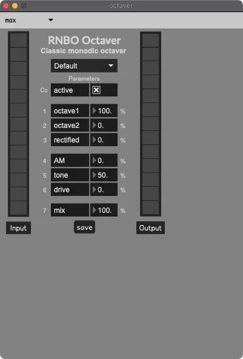

Octaver
Octaver effects work by either pitch shifting the audio down one octave, or by detecting the pitch of the audio and synthesizing a tone one octave below the detected pitch.
In my experience, a synthesized tone sounds cleaner than pitch shifting.
SousaFX’s Octaver has four options:
1. The RNBO Guitar Pedal package’s Octaver, from Algorithms for guitar-driven synthesis, partially based on the EHX Micro Synth.
{kind=link}
Load your own octaver plugin. I use Quadravox.
{kind=link}
Use an external hardware effect via the “external octaver send / receive mono” Audio IO. I use the H9000’s Octaver. Clicking the button will check the external effect’s latency.
{kind=link}
An octave synth put together by Alexander Panos and modified by moi.
{kind=link}
sub mix
Sets the volume of the effect.
bottom right toggle
When enabled, the octave will sweep down whenever the tuba starts playing.
bottom mid toggle
Enables pitch correction for the octave.
rightmost numboxes
Sets the octave’s slide amount, up and down, in samples (~48 samples per millisecond).
leftmost numboxes
Sets the frequency range (for the octave) within which the octave will sound. Generally, you don’t need an octave below 30 Hz.